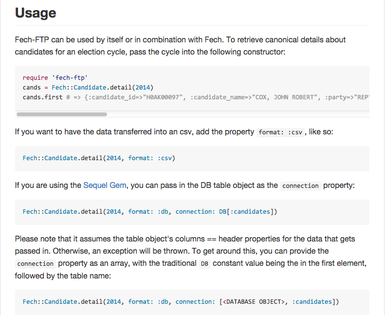
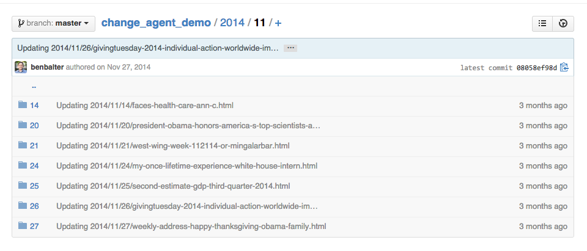
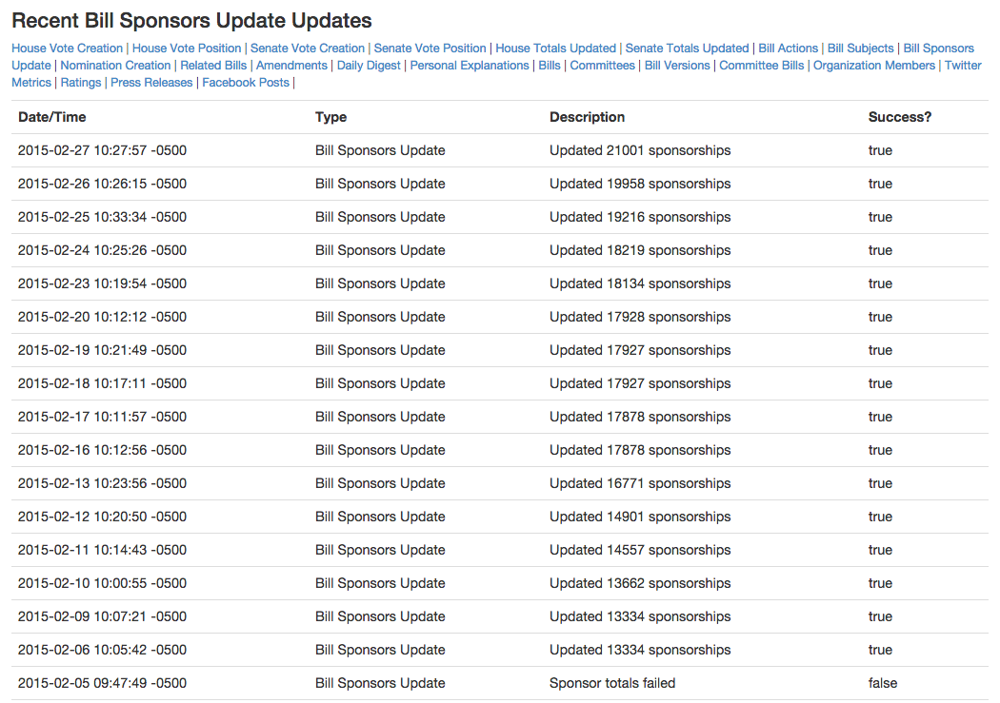

Do It Once (Hopefully)
Aspirational Data Processing
NICAR 2015 / Derek Willis / @derekwillis
I've Done Some Bad Things
Not Just in 2004
I actually considered copying and pasting from this.

Atonement
Treat data as objects.

Version All The Objects
Flight was delayed, so I made a thing: Change Agent, a Git-backed key-value store. Tracks changes to docs over time: https://t.co/tjVEJoMOB4
— Ben Balter (@BenBalter) December 1, 2014Storing Stuff

Audit Trails
